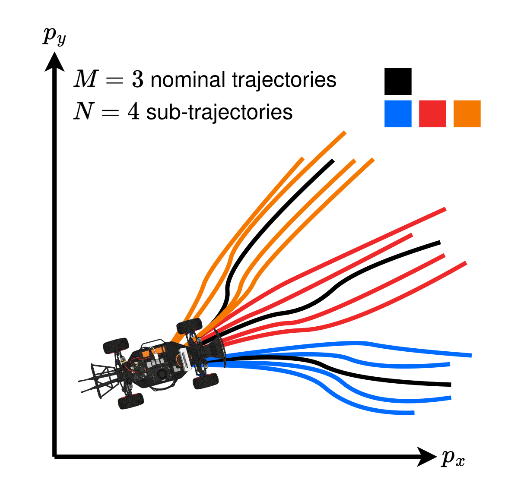
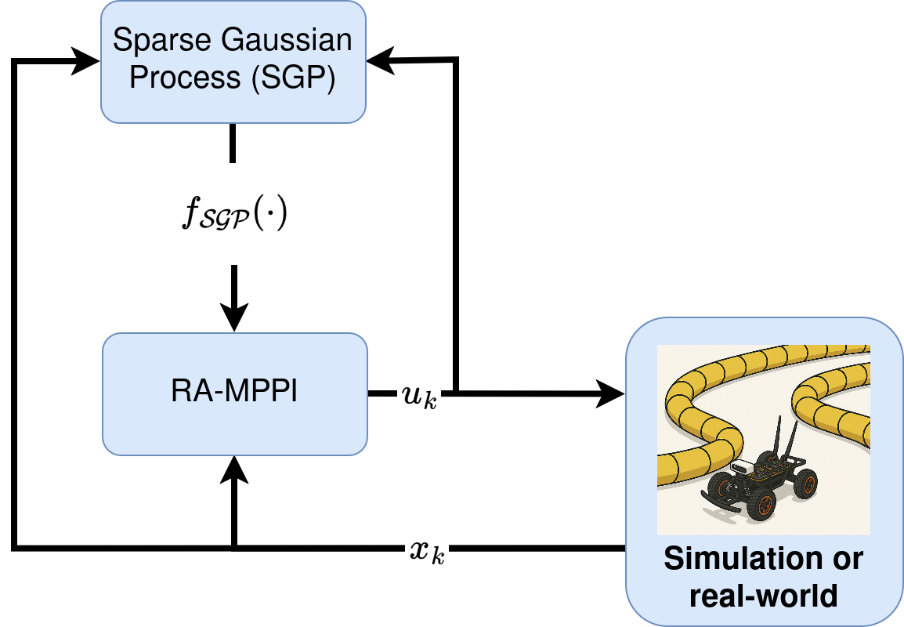
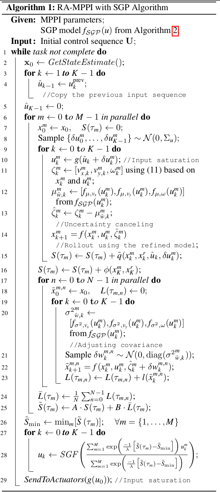
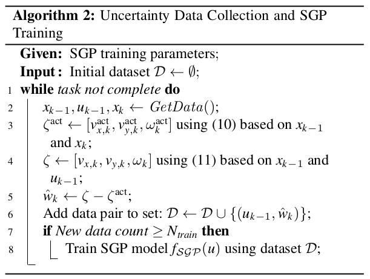
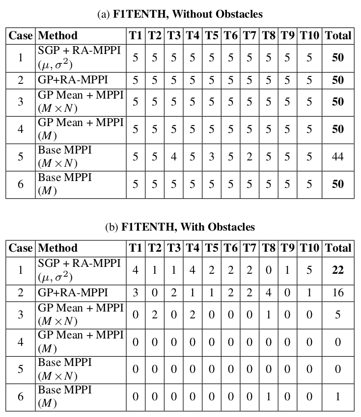
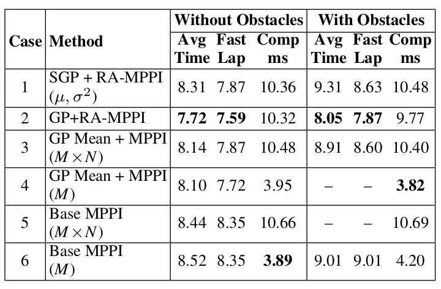

This paper proposes a robust Risk-aware MPPI (Model Predictive Path Integral) control by quantifying the uncertainty using SGP (Sparse Gaussian Process). During operation, the system collects state and input data to identify uncertainty affecting state transitions by comparing them with the data from the nominal model. Subsequently, the control inputs and estimated uncertainty are used to train the SGP. The trained SGP generates a mean and variance of the uncertainty, effectively compensating for the discrepancy between nominal and real dynamics. Specifically, the nominal model is refined using the estimated mean of the uncertainty, while the estimated variance of the uncertainty is incorporated into the Risk-aware MPPI framework. Validation is conducted through simulation and real-world experiments using an F1TENTH car with bicycle dynamics. The proposed method exhibits improved safety and trajectory tracking performance compared to baseline MPPI techniques.

To evaluate risk directly in the state space, an augmented sampling strategy is employed. Each of the M nominal control sequences is expanded into N stochastic sub-trajectories. These sub-trajectories are propagated using local velocity disturbances scaled by the SGP's predictive variance, allowing the controller to "foresee" potential collisions caused by unmodeled dynamics.

A data-driven Sparse Gaussian Process (SGP) efficiently models the mean and variance of state-transition errors during operation. The SGP's predictive mean is utilized to dynamically correct the nominal prediction model, while its predictive variance scales the disturbance covariance to evaluate risk across stochastic sub-trajectories.


Gazebo Simulation Analysis
Real-World Performance

